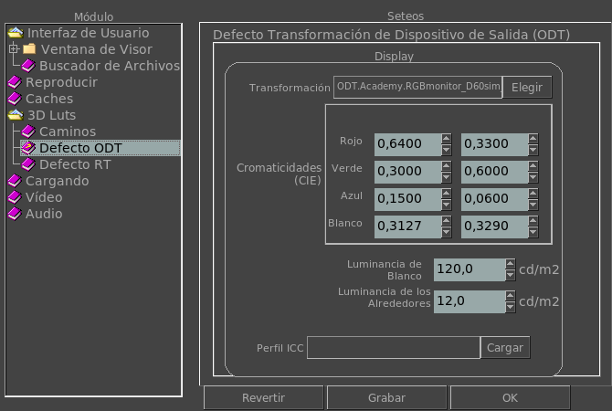

|  |
Transformación de Display de Salida (ODT) por DefectoEsta sección le permite ver el valor por defecto de la Transformación de Display de Salida (Output Device Transform u ODT ). La variable de entorno que lo controla es: MRV_ODT_CTL_TRANSFORM Esta sección le permite setear las CIE chromaticidades de tu monitor si las sabes. La variable de entorno que lo controla es: MRV_ODT_CTL_CHROMATICITIES Esta sección permite setear la luminancia de blanco de tu monitor si la conoces. La variable de entorno que lo controla es: MRV_ODT_CTL_WHITE_LUMINANCE Esta sección permite setear la luminancia de los alrededores si la conoces. La variable de entorno que lo controla es: MRV_ODT_CTL_SURROUND_LUMINANCE Este seteo te permite setear el perfil ICC del monitor si lo tienes. |